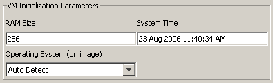
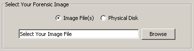
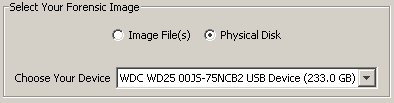
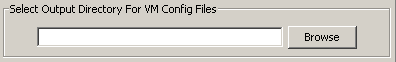
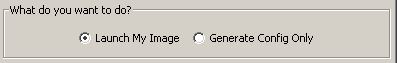
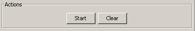

Quick Start.
Questa guida vi spiegherà rapidamente come utilizzare OpenLV.
Step 1 - Configurare i parametri della macchina virtuale

Prima di tutto occorre specificare alcuni parametri della Virtual Machine (VM):
-
dimensione della RAM:
Definisce la dimensione della memoria RAM assegnata alla macchina virtuale. Sarebbe preferibile configurare questo parametro con un valore identico a quello della macchina "reale" dalla quale è stata tratta l'immagine da virtualizzare. Ovviamente può essere un valore inferiore, in funzione della memoria che avete sulla macchina dove lancerete OpenLV.
-
sistema operativo:
Specifica il sistema operativo contenuto nell'immagine o nel disco fisico che proverete ad avviare. Ricordate che l'auto riconoscimento funziona solo per le immagini complete del disco (non per le partizioni). OpenLV è in grado di tollerare eventuali errori nella definizione del sistema operativo, rispetto a quello che riscontrerà effettivamente sull'immagine o sul disco.
-
data e ora del sistema
Indica la data e l'ora del sistema da usare durante l'avvio. È preferibile configurare la data e l'ora del sistema relativa al momento quando è stata creata l'immagine, per minimizzare il rischio di eventuali malfuzionamenti dovuti a programmi "time-trial" o "bombe a tempo" presenti sul sistema da analizzare..
Step 2 - selezionare un'immagine o un disco

Selezionate il bottone "Browse" per individuare l'immagine che volete lanciare::
-
Assicuratevi che questa sia una copia "bit-a-bit" del disco o della partizione. In caso contrario, utilizzate strumenti appositi come Mount Image Pro o Physical Disk Emulator per montare l'immagine e avviarla come un disco fisico.
Mount Image Pro or Physical Disk Emulator
-
L'immagine può essere collocata sul vostro calcolatore oppure su una condivisione di rete locale (criptata), in ogni caso potete utilizzare Gestione Risorse di Windows per individuarla.
-
Potete usare immagini suddivise in più parti selezionando ciascun file tramite la funzione di "selezione multipla" (multi select) oppure tenendo premuti contemporaneamente i tasti CTRL+Click o SHIFT+Click nella casella di dialogo. Alcuni programmi per la generazione delle immagini, dividono in più parti l'immagine, per consentire una comoda memorizzazione su CD, DVD, o superare le limitazioni del filesystem FAT. Comunque assicuratevi di selezionare tutti i pezzi dell'immagine prima di caricarli con OpenLV.
Altrimenti, se desiderate avviare un disco fisico collegato al vostro calcolatore

scegliete l'opzione "physical disk" tramite l'apposito menù a discesa:
-
Il disco fisico deve essere connesso direttamente al calcolatore dove gira OpenLV oppure connesso via USB o FireWire. Meglio usare un writeblocker (per un maggiore livello di protezione del reperto).
-
Qualora non vedeste il disco da montare nell'elenco delle periferiche proposto dal menù a discesa, assicuratevi che sia collegato correttamente al calcolatore che state usando. Occorre che il disco sia riconosciuto correttamente da Windows e mostri una lettera di periferica corretta..
Step 3 - selezionare la cartella di lavoro

Scegliete il percorso della cartella di lavoro:
-
in questa cartella saranno piazzati i file della macchina virtualizzata, inclusi quelli della configurazione e delle eventuali modifiche apportate all'originale. Questa cartella può essere collocata, come abbiamo detto, sia sul vostro calcolatore che in una condivisione di rete.
-
Le dimensioni della macchina virtualizzata cresceranno in funzione delle operazioni svolte, questo perché tutti i processi di scrittura vengono conservati a parte rispetto l'immagine di partenza. È opportuno disporre di spazio a sufficienza laddove collocherete la cartella di lavoro..
Step 4 - avviare o creare la macchina virtuale

Adesso decidete cosa volete fare con la vostra immagine
-
Avviare l'immagine:
selezionando questa opzione, OpenLV andrà a creare la macchina virtualizzata e lancerà VMware.
-
Generare la sola configurazione:
mediante questa opzione, OpenLV creerà soltanto la macchina virtualizzata ma non la avvierà tramite VMware. In questo modo potrete scegliere quando avviare e da dove, il file con estensione ".vmx".
Step 5 - Cliccare su "Start"

Infine, cliccate sul bottone "Start" e OpenLV completerà le altre operazioni.
-
Una finestra dei messaggi vi terrà informati sui progressi. Nella stessa finestra saranno memorizzati eventuali messaggi relativi ad errori incontrati durante il processo di avvio.
-
Altri messaggi di avviso potrebbero riguardare la creazione di una macchina virtuale "a sola lettura" (nel caso non si stia usando un disco grezzo) oppure perché non è la prima volta che si sta avviando la macchina virtualizzata (e sono quindi state apportate delle modifiche rispetto all'originale - sempre conservate in un file a parte, come si è già detto).
Traduzione a cura di Calogero Bonasia aka "0disse0"